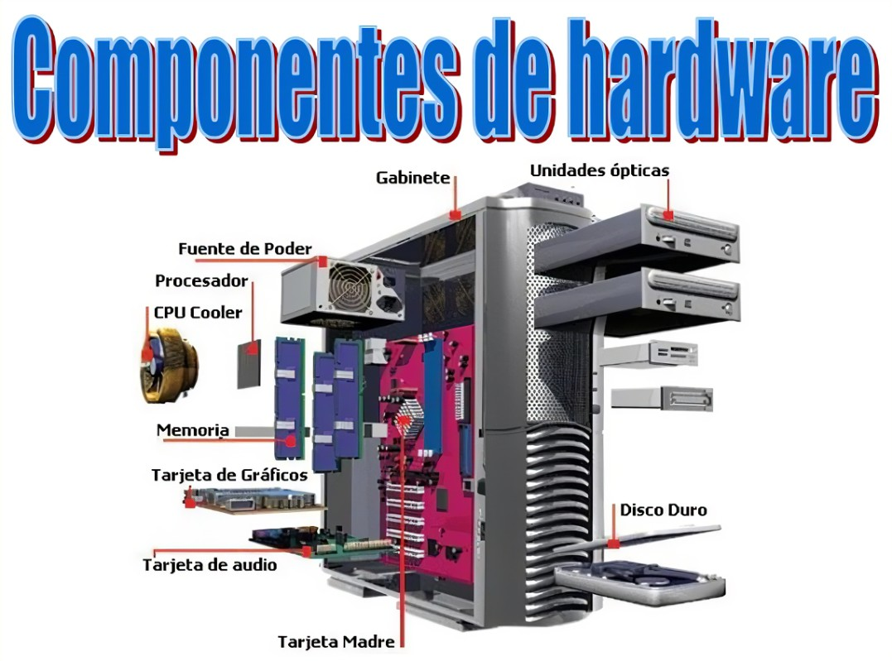

Sobre mí
Hola, mi nombre es Zharick Garcia Toncel. Estudiante de Ingenieria de Software y Datos en la IU Digital
de Antioquia. Me apasiona aprender y conocer acerca de la tecnologia y todo lo que es capaz esta misma.
Este blog es un proyecto en donde compartire mis avances y lo aprendido sobre todo lo relacionado al
tema.
Hardware
- Este se refiere a todos los componentes físicos de un sistema informático. Incluye elementos
como la placa base, el procesador, la memoria, los discos duros, y los dispositivos periféricos
como el teclado y el ratón. En resumen, es todo lo tangible y material que compone una computadora
o cualquier dispositivo electrónico.
Componentes Principales del Hardware
- Procesador (CPU): Es el cerebro de la computadora que realiza la mayoría de las
operaciones y cálculos.
- Memoria RAM: Es la memoria volátil que almacena temporalmente los datos que el
CPU necesita para ejecutar tareas.
- Disco Duro o SSD: Es el dispositivo de almacenamiento que guarda todos los datos
y programas de forma permanente.
- Placa Base (Motherboard): Es el circuito principal que conecta todos los componentes
del hardware.
- Tarjeta Gráfica (GPU): Se encarga de procesar y generar las imágenes que se
muestran en el monitor.
- Fuente de Alimentación: Proporciona la energía eléctrica necesaria para que todos
los componentes funcionen.

Influyentes Pioneros del Hardware de Computadora
- Charles Babbage (1791-1871): Conocido como el "padre de la computadora", Babbage
diseñó la Máquina Analítica, un concepto temprano de una computadora general. Aunque nunca fue
construida en su totalidad durante su vida, su diseño sentó las bases para la computación
moderna.
- Alan Turing (1912-1954): Aunque es más conocido por su trabajo en teoría de la
computación, también influyó en el hardware con sus conceptos sobre máquinas universales y
computadoras programables, que influyeron en el diseño de los primeros ordenadores electrónicos.
- John von Neumann (1903-1957): Su arquitectura de von Neumann es la base del
diseño de casi todas las computadoras modernas. Introdujo el concepto de una unidad de memoria
que almacena tanto datos como instrucciones, fundamental para la programación.
- Grace Hopper (1906-1992): Fue una pionera en el desarrollo de lenguajes de
programación y de la primera compiladora. Su trabajo facilitó la programación en hardware al
permitir que los programadores escribieran en lenguajes más accesibles.
- Jack Kilby (1923-2005): Inventó el circuito integrado, también conocido como
chip. Su invención revolucionó la industria de la computación al permitir la miniaturización de
los componentes electrónicos, llevando a la creación de computadoras personales y dispositivos
móviles.
- Robert Noyce (1927-1990): Co-inventor del circuito integrado y uno de los
fundadores de Intel. Su trabajo, junto con el de Jack Kilby, permitió el desarrollo de
microprocesadores y el avance significativo en la tecnología de hardware.
¿Por qué es necesario el hardware?
El hardware es la base fundamental de cualquier sistema informático. Sin el, los software y programas
no podrían ejecutarse, ya que el hardware proporciona la infraestructura física necesaria para que
el software funcione. A continuacion razones por las cuales el hardware es clave:
- Fundamento de la Computación: El hardware incluye todos los componentes físicos
de un sistema de computación, como el procesador, la memoria, y los dispositivos de almacenamiento.
Estos componentes son esenciales para realizar operaciones y procesar datos.
- Rendimiento y Capacidad: La calidad y capacidad del hardware determinan el
rendimiento general de un sistema. Un procesador más rápido, mayor cantidad de memoria RAM y
almacenamiento eficiente permiten ejecutar aplicaciones más complicadas y manejar más datos
simultáneamente.
- Interfaz con el Mundo Exterior: Dispositivos de entrada (como teclado y ratón) y
salida (como monitores e impresoras) permiten a los usuarios interactuar con la computadora y
obtener resultados. Sin estos dispositivos, la comunicación con el sistema sería limitada.
- Soporte para Aplicaciones: Las aplicaciones y sistemas operativos dependen del
hardware para funcionar correctamente. Cada tipo de aplicación puede tener requisitos específicos
de hardware, como gráficos avanzados para juegos o grandes capacidades de almacenamiento para bases
de datos.
- Innovación y Evolución: La evolución del hardware ha permitido desarrollos
tecnológicos significativos, como el aumento de la velocidad de procesamiento, la miniaturización
de los componentes y la mejora en la eficiencia energética.
- Estabilidad y Fiabilidad: Un hardware robusto y bien diseñado es esencial para
la estabilidad y fiabilidad del sistema. Componentes de alta calidad y bien mantenidos garantizan
un funcionamiento duradero y eficiente.
En resumen, el hardware es esencial no solo como el soporte físico de la tecnología, sino también
como un factor clave que influye en la capacidad y eficiencia de los sistemas de computación. Sin
hardware, no habría posibilidad de ejecutar el software ni de aprovechar las capacidades tecnológicas
modernas.